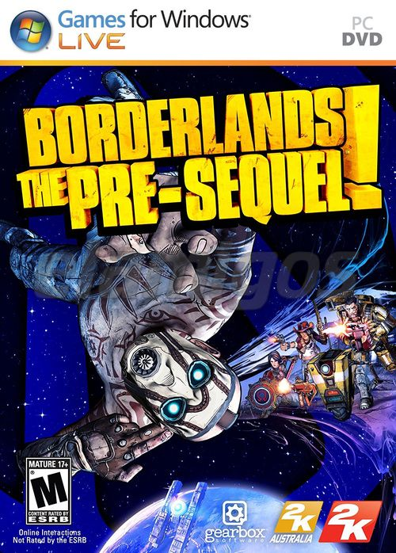

Borderlands The Pre-Sequel Complete Edition 11 GB
Género: Acción, Mundo abierto, Looter Shooter
El modo de juego es similar al Borderlands 2, pero con nuevas mejoras añadidas,
tales como armas láser, armas criogenias que congelan al enemigo, nuevos
vehículos, y cada personaje tiene argumentos propios ligados a la misión que
desarrollan.